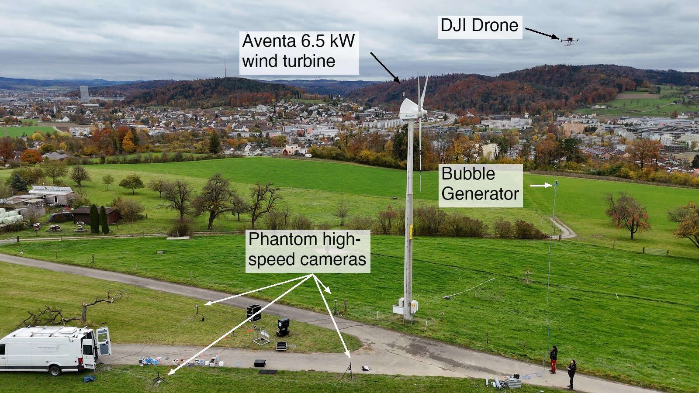
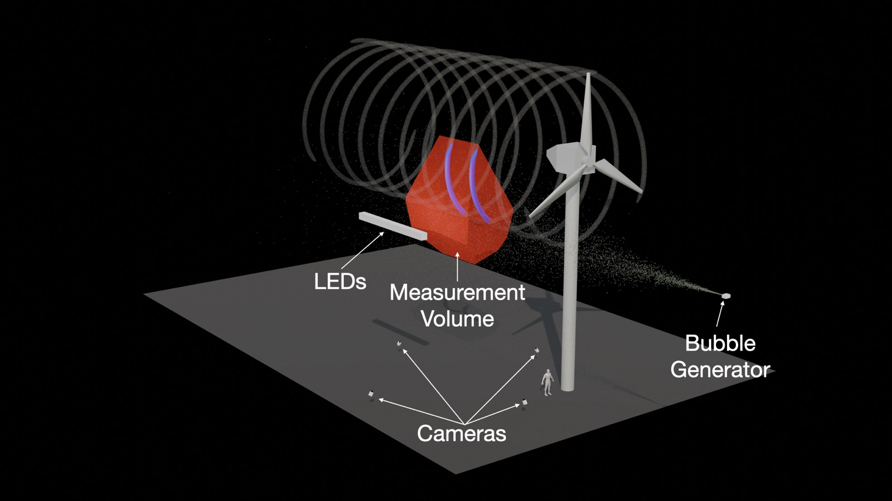
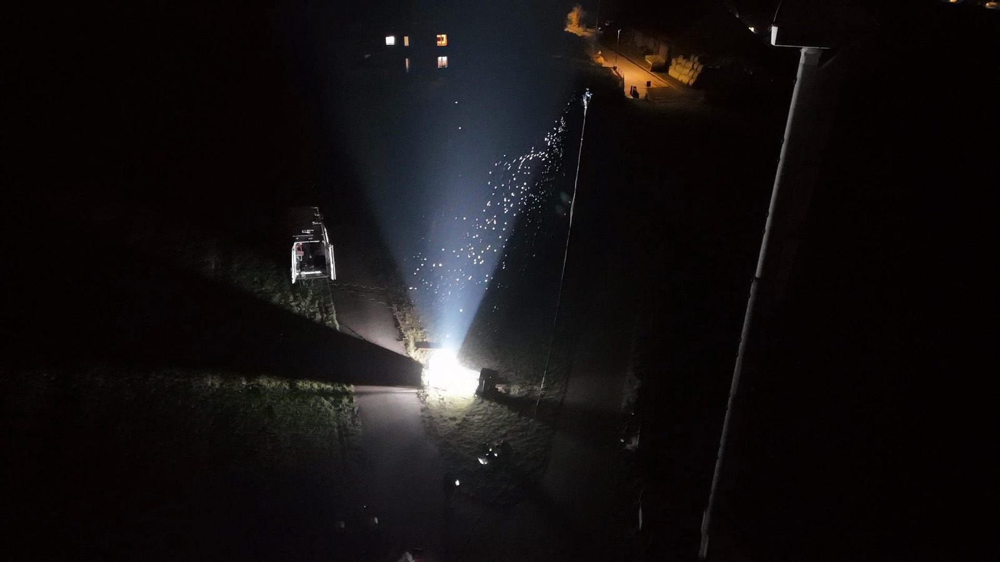
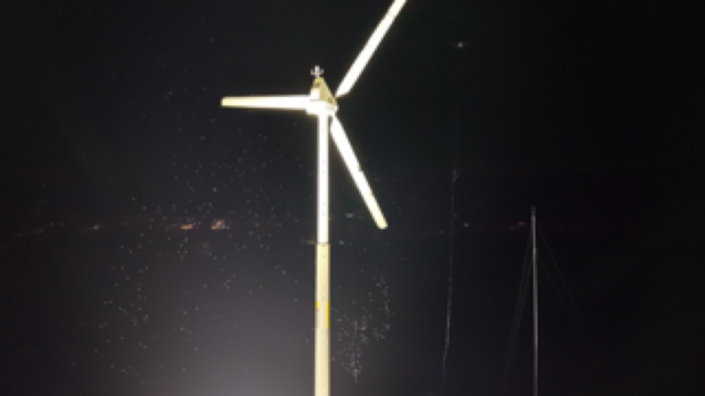

Why field measurements
Wind tunnels cannot reproduce the Reynolds numbers and large-scale features of atmospheric turbulence, so most tip vortex studies use laminar or unrealistic turbulent inflow. Commercial field instruments like anemometers and LiDAR lack either the spatial coverage or the temporal resolution to resolve vortex dynamics. Tracking particles in the field fills that gap.

Explore the setup
The system
- Seeding. Helium-filled soap bubbles (HFSB) from a custom bubble generator, which I designed and built to be lifted to hub height by a DJI Matrice 350 drone.
- Illumination. Sunlight during the day, or a 10 kW xenon arc lamp at night. Each bubble shows up as bright glare points that the cameras can track.
- Imaging. Four synchronized Phantom VEO4K-990 cameras whose shared field of view sits 15 m above the ground in the near wake.
- Processing. 3D trajectories reconstructed with the open-source OpenLPT framework to characterize tip vortex dynamics and breakdown.


Campaign
I led the field campaign at the OST turbine, from test planning through on-site execution, and the February 2026 data are now being processed into 3D Lagrangian tracks. The work was presented at the Recent Advances in Turbulent Wind Farm Dynamics colloquium in London (2026).

From images to vortices
Each recording is millions of bright dots. Turning them into vortex measurements takes four steps.
Four views
Four synchronized high-speed cameras film the measurement volume from different angles at 900 frames per second. Each soap bubble shows up as a pair of bright glare points.
Match & triangulate
Using the camera calibration, the same bubble is matched across all four images. Its four lines of sight cross at a single point, which gives its position in 3D. Repeating this every frame follows the bubble from where it enters the measurement volume, downstream of the rotor, to where it leaves.
Track
Positions are linked from frame to frame into Lagrangian trajectories. Bubbles caught by a passing tip vortex loop around its core as they are carried downstream.
Vortex
Idealized, the tip vortex is a line carried downstream by the flow, with a bubble or two orbiting it. Seen along the vortex axis, their trajectories circle the core. Fitting a vortex model to them gives the core position, core radius rc and circulation Γ, and how they change as the vortex breaks down.
Schematic with synthetic particles around an idealized tip vortex, not measured data. Processing uses OpenLPT.
In collaboration with Mano Grunwald and Claudia Brunner (MPI-DS).